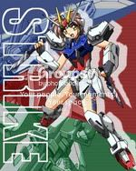

https://www.facebook.com/groups/eco.in.th/
ตอนนี้กลุ่มเฟสอีโค่ "สมาชิกครบ 500 คน" เรียบร้อยแล้วจ้า
* ขอขอบคุณผู้ที่สนใจและผู้สนับสนุนมาโดยตลอด ♠♥
 โดย iCygnus » จันทร์ 19 พ.ย. 2012 6:33 pm
โดย iCygnus » จันทร์ 19 พ.ย. 2012 6:33 pm


 โดย Dragoona » จันทร์ 19 พ.ย. 2012 6:36 pm
โดย Dragoona » จันทร์ 19 พ.ย. 2012 6:36 pm


 โดย x105 » อังคาร 20 พ.ย. 2012 1:46 am
โดย x105 » อังคาร 20 พ.ย. 2012 1:46 am


 โดย NETIX » อังคาร 20 พ.ย. 2012 1:57 am
โดย NETIX » อังคาร 20 พ.ย. 2012 1:57 am


 โดย x105 » พุธ 21 พ.ย. 2012 10:42 pm
โดย x105 » พุธ 21 พ.ย. 2012 10:42 pm
 โดย NETIX » พุธ 21 พ.ย. 2012 10:57 pm
โดย NETIX » พุธ 21 พ.ย. 2012 10:57 pm
x105 เขียน:เลเวล 57แล้ว เย้ เปลี่ยนขึ้นเอเลจนได้หลังจากเล่นมาเป็นอาทิตย์ แต่ที่ปวดหัวสุดคงเป็นเเกมเบอร์ตามเคย
ล่อน้ำหอมไป 6 ขวดกับการงมคำถามภาษาHK แต่พอเปลี่ยนได้ก็เลเวลค่อนข้างสบายละ
คาดว่าวันพรุ่งนี้พระกับเทรดเดอร์จะได้สกิลโซลซักที ตีอยู่ตรงฟุชิกิคนเดียวเหงาจัง
จะว่าไปทำไมผมรู้สึกว่าexpจากมอนมันได้น้อยกว่าที่เห็นในวิกิหว่า เซิฟนี้มันexpหารสองของยุ่นป่ะเนี่ย
 โดย roomnumber9 » ศุกร์ 23 พ.ย. 2012 10:01 pm
โดย roomnumber9 » ศุกร์ 23 พ.ย. 2012 10:01 pm
 โดย iCygnus » ศุกร์ 23 พ.ย. 2012 11:23 pm
โดย iCygnus » ศุกร์ 23 พ.ย. 2012 11:23 pm
roomnumber9 เขียน:อ๊ายยย ขอเล่นด้วย ยังมีคนเล่นกันใช่มั้ย
 โดย homin » เสาร์ 24 พ.ย. 2012 12:19 pm
โดย homin » เสาร์ 24 พ.ย. 2012 12:19 pm

 โดย x105 » เสาร์ 24 พ.ย. 2012 12:55 pm
โดย x105 » เสาร์ 24 พ.ย. 2012 12:55 pm
 โดย homin » เสาร์ 24 พ.ย. 2012 1:09 pm
โดย homin » เสาร์ 24 พ.ย. 2012 1:09 pm


 โดย iCygnus » เสาร์ 24 พ.ย. 2012 2:57 pm
โดย iCygnus » เสาร์ 24 พ.ย. 2012 2:57 pm
homin เขียน:แวะมาทักทายครับ
เพิ่งกลับมาเล่นนะครับ ตอนแรกว่าจะไปญี่ปุ่น แต่ลองกลับมาฮ่องกงดูก่อน ไว้มี VPN ค่อยไปญี่ปุ่น (อ่านภาษาจีนไม่ออก แต่ภาษาญี่ปุ่นพอไหว)
แต่ถ้าเล่นฮ่องกงสนุกอาจสิงสถิตอยู่ฮ่องกงเลยก็เป็นได้ครับ
x105 เขียน:เลเวล70แล้วยังไม่ได้เข้าริงเลย T-T

homin เขียน:ท่านเล่นไวมากเลย
ส่วนตัวจะไปเล่น BP Farmer เหมือนสมัยก่อน เพราะแบกของได้เยอะ
 โดย homin » อาทิตย์ 25 พ.ย. 2012 7:29 pm
โดย homin » อาทิตย์ 25 พ.ย. 2012 7:29 pm

 โดย iCygnus » อาทิตย์ 25 พ.ย. 2012 7:30 pm
โดย iCygnus » อาทิตย์ 25 พ.ย. 2012 7:30 pm
homin เขียน:เพิ่งเล่นไปได้วันนึง
เกิดอาการสงสัยอีกล่ะ ในเซิร์ฟเวอร์ฮ่องกงนี่รีเควสให้วันละ 1 Point เองเหรอครับ
หรือผมแค่คิดไปเองก็ไม่รู้
 โดย Dragoona » อาทิตย์ 25 พ.ย. 2012 8:35 pm
โดย Dragoona » อาทิตย์ 25 พ.ย. 2012 8:35 pm
กำลังดูบอร์ดนี้: ไม่มีสมาชิก และ บุคคลทั่วไป 2 ท่าน